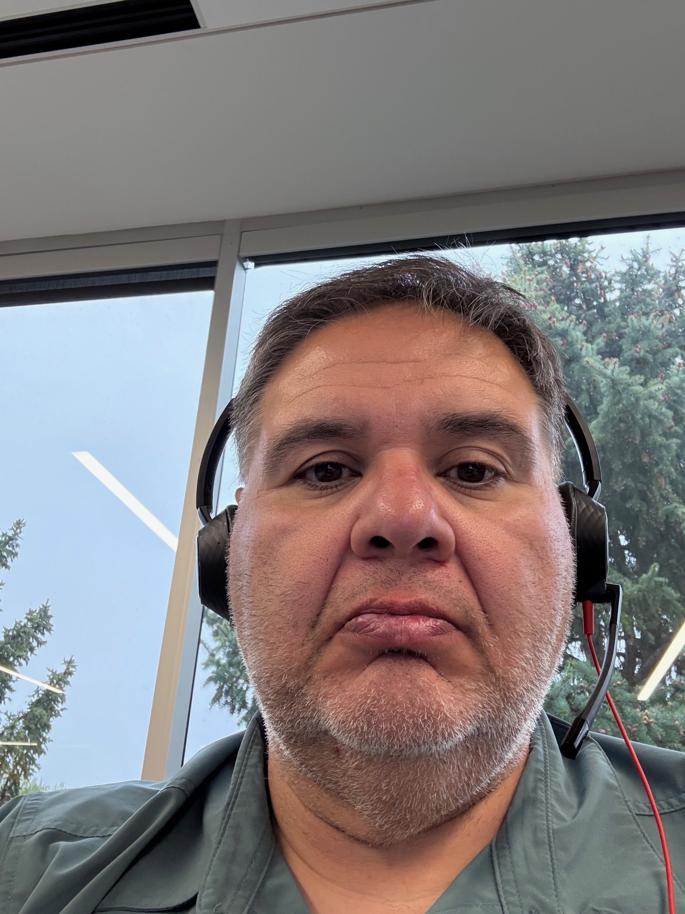

Christopher Montoya

Professional Summary
Results-driven technology leader with a proven track record of building and scaling
high-performing engineering teams. Passionate about driving technical excellence, fostering
a culture of collaboration, and aligning engineering initiatives with business objectives. Adept
at leading cross-functional teams, optimizing development processes, and delivering
scalable, cloud-based solutions that drive business success. Strong advocate for mentorship,
innovation, and continuous improvement.
Education
- Master of Science, Computer Engineering - The University of New Mexico (2007)
- Bachelor of Science, Electrical Engineering - The University of New Mexico (1999)
Work Experience
- Lead and scale multiple software engineering teams (11 employees, 15 contractors) across onshore and offshore locations, driving the development of mission-critical, cloud-based applications.
- Own application platforms that support activation and provisioning for all Comcast business lines, ensuring high availability and performance.
- Develop and execute technical strategies aligned with business objectives, optimizing resource allocation and team structure.
- Foster a culture of learning and career growth through mentorship, regular coaching sessions, and cross-training opportunities.
- Partner with internal stakeholders, vendors, and syndication partners to align engineering efforts with business needs.
- Oversee a $3M annual budget, ensuring optimal resource allocation and cost-effective project execution.
- Led initiatives that reduced production defects through automated testing and rigorous code review processes.
- Championed continuous improvement efforts, resulting in increased team productivity and faster time-to-market for key projects.
- Technical lead for a high-performing Agile development team, designing and implementing cloud-based video processing software.
- Developed and optimized microservices architecture using Kubernetes, Docker, Go, and Java, ensuring high scalability and reliability.
- Led architectural planning and code reviews to enhance system performance and maintainability.
- Spearheaded the transition of a critical routing service from Java to Go, improving performance by 4x and eliminating bottlenecks.
- Integrated Prometheus and Grafana for real-time monitoring and performance analytics, enhancing system observability.
- Developed Kubernetes-orchestrated microservices in Go and Java on cloud infrastructure, utilizing Docker containers.
- Managed multiple projects simultaneously while maintaining strict deadlines and high-quality standards.
- Collaborated with cross-functional teams to design innovative software solutions.
- Mentored junior developers, fostering professional growth and enhancing team productivity.
- Developed software development best practices for the team.
- Full stack developer working in Flex / ActionScript, Python, JavaScript, and TypeScript.
- Developed new and innovative solutions for workbook annotations and SOX solutions that saved customers 2 days' worth of manual work-paper management.
- Enhanced software functionality by identifying and resolving complex technical issues.
- Collaborated with cross-functional teams to design innovative software solutions.
- Developed modeling and simulation software to simulate data link transceivers, video controllers, and other mission-essential equipment, developing in C++ and C#.
- Developed client software that communicated directly with mission-essential hardware (radios, data links, A/V multiplexers) using Ethernet, KLV, or custom binary messaging.
- Grew mission simulator team from the ground up from myself to over 10 engineers over a two-year span.
- Led the design and development of dynamic airspace control and field order processing systems for the US Army Future Combat Systems program.
- Developed robust, high-quality, safety-critical code in Java.
- Developed mission-critical satellite telemetry processing engine in C and Java, delivering 3 months ahead of schedule.
- Designed and delivered coursework in Computer Science and Engineering, enhancing student comprehension through interactive lectures and hands-on programming assignments.
- Collaborated with faculty to develop innovative teaching strategies, improving student learning outcomes.
- Courses Taught:
- Introduction to Computer Science (Java Programming & Fundamental CS Concepts)
- Computer Programming for Engineers (Analytical Thinking & CS for Engineering Students)
- Introduction to Computers (General Computing Topics for Non-Engineers)
- Led ground system software development on a $150 million NASA CloudSat satellite mission.
- Developed command and control and telemetry processing ground software in Java and C++.
- Worked closely with Air Force personnel to determine ground system requirements for new satellite missions.
- Developed military modeling and simulation software using C++ and TCL/TK.
- Developed commercial environmental health and safety management software using Visual Basic and Microsoft SQL Server.
Skills
- Languages: Java, Go, Python, C++
- Containerization: Docker, Kubernetes
- Databases: MySQL, PostgreSQL, MongoDB
- Agile Methodologies: Scrum, Kanban
- Version Control: Git, SVN
- Monitoring: Prometheus, Grafana
- Testing: JUnit, Mockito
- Tools: IntelliJ IDEA, Visual Studio Code, Eclipse
- Operating Systems: Mac, Linux, Windows
- Networking: TCP/IP, HTTP, RESTful APIs
Other